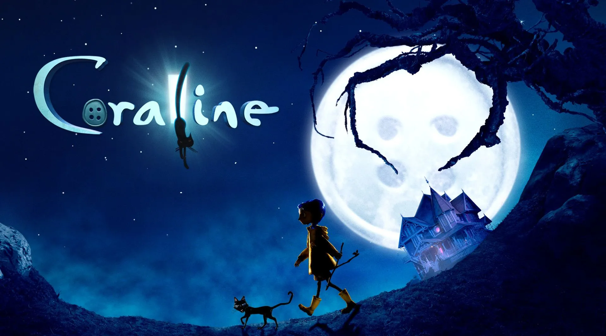

Curiosidades de coraline
Morena Godoy

Solo para Coraline, se hicieron 28 marionetas
en un momento específico de la película llega a utilizar 16 diferentes expresiones en un lapso de tan solo 35 segundos
Solamente el personaje de Coraline tuvo un total de 207, 336 posibles combinaciones faciales